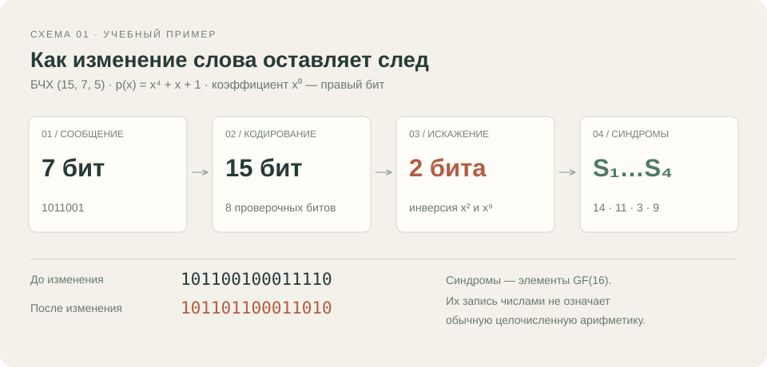
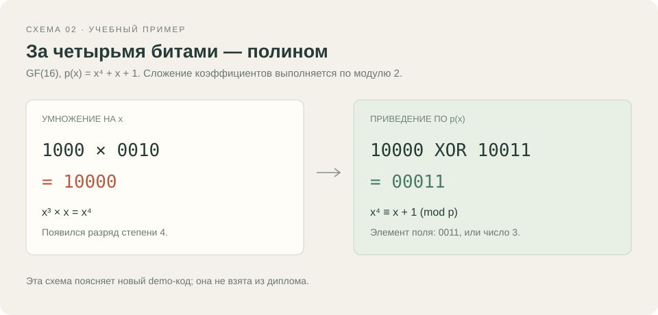

2003 · Учебная глава; дата условная
Коды БЧХ
След ошибки в двоичном слове
Версия для чтения и печати. Все тексты, таблицы, иллюстрации и исходники доступны без JavaScript.
Как заметить ошибку в сообщении
При передаче двоичного сообщения один или несколько битов могут измениться. Добавленные проверочные биты позволяют обнаруживать такие изменения и, в пределах возможностей кода, восстанавливать исходное слово.
В этой учебной главе можно изменить биты принятого слова и увидеть, как пересчитываются синдромы. Это новый пример для макета; параметры, тексты и результаты диплома будут восстановлены из вашего архива.
Код и соглашения
В примере выбран двоичный БЧХ-код (15, 7, 5): 7 информационных битов превращаются в слово длиной 15 бит. Минимальное расстояние 5 позволяет корректному декодеру гарантированно исправлять до двух ошибок.
Поле GF(16) построено по p(x) = x⁴ + x + 1. Порождающий полином g(x) = x⁸ + x⁷ + x⁶ + x⁴ + 1. Бит i соответствует коэффициенту при xⁱ; в записи слова старший бит находится слева.
Что именно показывает синдром
Синдромы вычисляются подстановкой элементов поля в принятое слово. Сложение коэффициентов выполняется через XOR, умножение — с приведением по примитивному полиному. Числа 0…15 в таблице служат компактной записью элементов поля.
Для сообщения 1011001 получаем 101100100011110. Если изменить коэффициенты x² и x⁹, получится 101101100011010, а синдромы S₁…S₄ будут равны 14, 11, 3, 9. Нулевые синдромы показывают принадлежность слова к коду, но не доказывают, что при передаче не возникло искажения.
Как читать график вероятностей
График показывает вероятность того, что в блоке из 15 бит окажется не более одной или не более двух ошибок. Для расчёта принято, что каждый бит меняется независимо с одинаковой вероятностью p.
Это расчёт выбранной учебной модели. Кривые не являются замерами программы или оценкой фактической успешности декодера. При числе ошибок больше двух гарантии коррекции нет: возможны отказ или ошибочная коррекция.
От формулы к исходнику
Во вкладке кода можно проследить умножение в GF(16), кодирование и вычисление синдромов, сопоставить формулу со строками и скачать полный учебный исходник Pascal.
Показанный Pascal-файл вычисляет синдромы; браузерный эксперимент использует заранее подготовленную реализацию приложения. При переносе реальной программы соглашения, промежуточные результаты и контрольные примеры будут сверены заново.
Иллюстрации


Данные графиков
Сколько ошибок попадает в блок
Учебная биномиальная модель: 15 бит, независимые ошибки. Показаны P(K≤1) и P(K≤2), а не измеренная успешность декодирования. Данных из диплома в этом графике нет.
| Вероятность ошибки бита p | Не более 1 ошибки Вероятность события, % | Не более 2 ошибок Вероятность события, % |
|---|---|---|
| 0.0 | 100.0 | 100.0 |
| 0.01 | 99.037022656 | 99.95841973 |
| 0.02 | 96.466168509 | 99.696062544 |
| 0.03 | 92.702751399 | 99.062857401 |
| 0.04 | 88.089036727 | 97.970819694 |
| 0.05 | 82.90474645 | 96.379976136 |
| 0.06 | 77.376266991 | 94.286667617 |
| 0.07 | 71.684699663 | 91.713904603 |
| 0.08 | 65.972880068 | 88.703486819 |
| 0.09 | 60.351480955 | 85.309632541 |
| 0.1 | 54.904301892 | 81.593893089 |
| 0.11 | 49.692839061 | 77.621155449 |
| 0.12 | 44.760219142 | 73.456560451 |
| 0.13 | 40.134572833 | 69.163185979 |
| 0.14 | 35.831915764 | 64.800364319 |
| 0.15 | 31.858597555 | 60.422520409 |
| 0.16 | 28.213373293 | 56.078433335 |
| 0.17 | 24.8891459 | 51.810837364 |
| 0.18 | 21.874422534 | 47.656291112 |
| 0.19 | 19.154523369 | 43.64525427 |
| 0.2 | 16.712576742 | 39.802320925 |
Исходный код
Вычисление синдромов · Pascal
Новый учебный исходник для макета, синтаксис Free Pascal. Не архивная программа владельца. Содержит кодирование и синдромы; декодера в этом файле нет.
program SyndromeDemo;
{$mode objfpc}{$H+}
{ New teaching example for the Almanac mockup. Not a historical source.
Binary BCH(15,7,5), GF(16), p(x)=x^4+x+1, g(x)=x^8+x^7+x^6+x^4+1.
Bit i is the coefficient of x^i. This program computes syndromes only. }
const
WordLength = 15;
Primitive = $13;
Generator = $1D1;
MessageValue = $59; { 1011001 }
function GFMul(a, b: Byte): Byte;
var
product: Byte;
begin
product := 0;
while b <> 0 do
begin
if (b and 1) <> 0 then product := product xor a;
b := b shr 1;
a := a shl 1;
if (a and $10) <> 0 then a := a xor Primitive;
end;
GFMul := product;
end;
function GFPow(base: Byte; exponent: Integer): Byte;
var
value: Byte;
begin
value := 1;
while exponent > 0 do
begin
if (exponent and 1) <> 0 then value := GFMul(value, base);
base := GFMul(base, base);
exponent := exponent shr 1;
end;
GFPow := value;
end;
function Encode(message: Word): Word;
var
shifted, remainder: Word;
bitIndex: Integer;
begin
shifted := message shl 8;
remainder := shifted;
for bitIndex := 14 downto 8 do
if (remainder and (Word(1) shl bitIndex)) <> 0 then
remainder := remainder xor (Generator shl (bitIndex - 8));
Encode := shifted or remainder;
end;
function Syndrome(received: Word; j: Integer): Byte;
var
bitIndex: Integer;
value: Byte;
begin
value := 0;
for bitIndex := 0 to WordLength - 1 do
if (received and (Word(1) shl bitIndex)) <> 0 then
value := value xor GFPow(2, (j * bitIndex) mod WordLength);
Syndrome := value;
end;
procedure PrintWord(value: Word);
var
bitIndex: Integer;
begin
for bitIndex := WordLength - 1 downto 0 do
Write((value shr bitIndex) and 1);
end;
var
codeword, received: Word;
j: Integer;
begin
codeword := Encode(MessageValue);
received := codeword xor (Word(1) shl 2) xor (Word(1) shl 9);
Write('Codeword: '); PrintWord(codeword); Writeln;
Write('Received: '); PrintWord(received); Writeln;
Write('Syndromes (integer representation of GF(16) elements):');
for j := 1 to 4 do Write(' ', Syndrome(received, j));
Writeln;
end.
Эксперимент
Учебный БЧХ (15,7,5), GF(16). Меняйте биты и наблюдайте синдромы, включая особый случай пяти изменений с нулевыми синдромами. Исправление ошибок здесь не выполняется; это новый пример, не перенос диплома.
Открыть работающий пример (требуется JavaScript).
Материалы
- Параметры и происхождение demo — Соглашения, формулы и контрольный пример. Создано для макета.
- Данные графика · CSV — Вероятности числа ошибок в учебной модели, не экспериментальные замеры.
- Учебная программа · Pascal — Открывается как текст; запуск Pascal требует соответствующего компилятора.
Примечания
Год 2003, структура главы и все материалы демонстрационные. Архив диплома не исследован.
Нулевой синдром означает принадлежность принятого слова к коду; это не доказательство отсутствия ошибки передачи.
Вероятностный график основан на независимых ошибках битов. Он не описывает произвольный канал и не измеряет время работы программы.
Показанные исходники и браузерный модуль — новые учебные реализации; исторические результаты владельцу не приписываются.